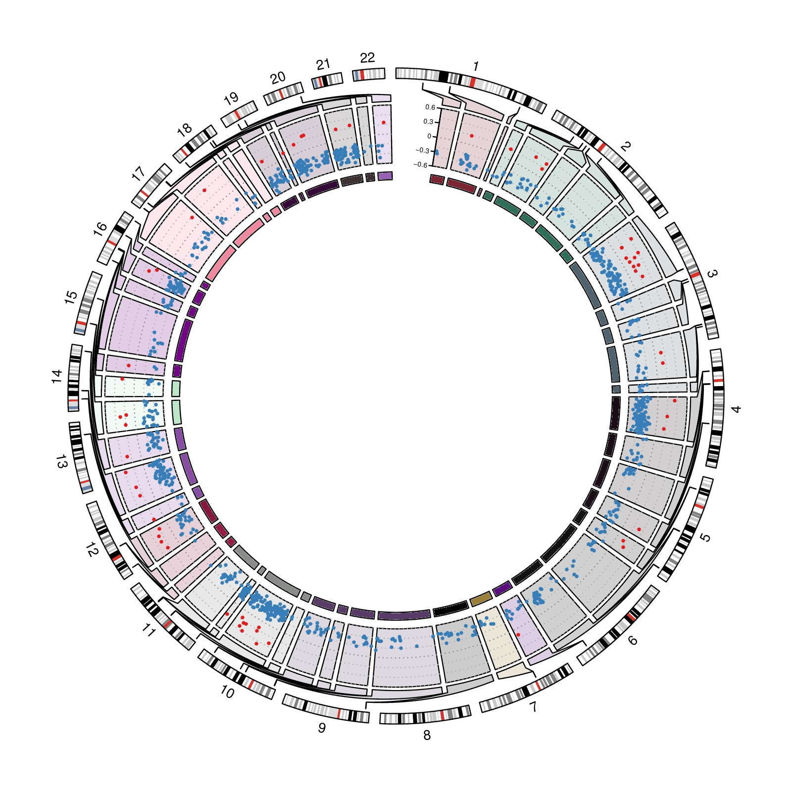

library(circlize)
load(system.file(package = "circlize", "extdata", "tagments_WGBS_DMR.RData"))
chr_bg_color = rand_color(22, transparency = 0.8)
names(chr_bg_color) = paste0("chr", 1:22)
f1 = function() {
circos.par(gap.after = 2, start.degree = 90)
circos.initializeWithIdeogram(chromosome.index = paste0("chr", 1:22),
plotType = c("ideogram", "labels"), ideogram.height = 0.03)
}
f2 = function() {
circos.par(cell.padding = c(0, 0, 0, 0), gap.after = c(rep(1, nrow(tagments)-1), 10))
circos.genomicInitialize(tagments, plotType = NULL)
circos.genomicTrack(DMR1, ylim = c(-0.6, 0.6),
panel.fun = function(region, value, ...) {
for(h in seq(-0.6, 0.6, by = 0.2)) {
circos.lines(CELL_META$cell.xlim, c(h, h), lty = 3, col = "#AAAAAA")
}
circos.lines(CELL_META$cell.xlim, c(0, 0), lty = 3, col = "#888888")
circos.genomicPoints(region, value,
col = ifelse(value[[1]] > 0, "#E41A1C", "#377EB8"),
pch = 16, cex = 0.5)
}, bg.col = chr_bg_color[tagments$chr], track.margin = c(0.02, 0))
circos.yaxis(side = "left", at = seq(-0.6, 0.6, by = 0.3),
sector.index = get.all.sector.index()[1], labels.cex = 0.4)
circos.track(ylim = c(0, 1), track.height = uh(2, "mm"),
bg.col = add_transparency(chr_bg_color[tagments$chr], 0))
}
circos.nested(f1, f2, correspondance, connection_col = chr_bg_color[correspondance[[1]]])
circos.clear()